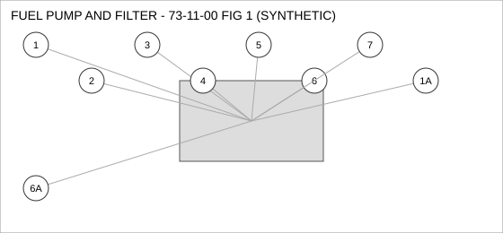
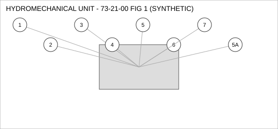
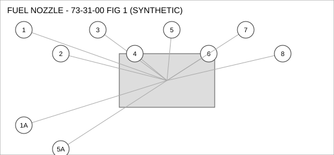
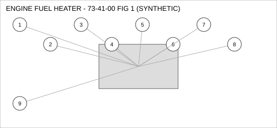

Document type: IPC | Revision: 15 | Fleet: B737
| CODE | AIRCRAFT |
|---|---|
| A | 737-700 |
| B | 737-800 |
| C | 737-MAX8 |

| FIG ITEM | PART NUMBER | NOMENCLATURE | EFFECT | UPA |
|---|---|---|---|---|
| 1 | 285-59832-05 | FITTING - ELBOW, FUEL PUMP AND FILTER | ALL | 1 |
| 1A | 69-47880-23 | FITTING - ELBOW, FUEL PUMP AND FILTER | ALL | 1 |
| INTERCHANGEABLE WITH 285-59832-05 (TWO-WAY). | ||||
| 2 | 60-35006-01 | NUT - SELF-LOCKING, FUEL PUMP AND FILTER | ALL | 2 |
| 3 | 162-36724-14 | BRACKET - MOUNTING, FUEL PUMP AND FILTER | ALL | 4 |
| 4 | 60-28098-17 | HOSE ASSEMBLY, FUEL PUMP AND FILTER | B C | 1 |
| 5 | 162-78875-13 | CLAMP - V-BAND, FUEL PUMP AND FILTER | ALL | 1 |
| 6 | 285-54869-18 | VALVE - SHUTOFF, FUEL PUMP AND FILTER | ALL | 1 |
| 6A | 285-59767-29 | VALVE - SHUTOFF, FUEL PUMP AND FILTER | ALL | 1 |
| INTERCHANGEABLE WITH 285-54869-18 (TWO-WAY). | ||||
| 7 | 69-89963-16 | SOLENOID, FUEL PUMP AND FILTER | A B | 1 |

| FIG ITEM | PART NUMBER | NOMENCLATURE | EFFECT | UPA |
|---|---|---|---|---|
| 1 | 65-36485-27 | DUCT - FLEXIBLE, HYDROMECHANICAL UNIT | C | 4 |
| 2 | 69-27992-04 | VALVE - SHUTOFF, HYDROMECHANICAL UNIT | B C | 4 |
| 3 | 65-16653-22 | COUPLING - QUICK DISCONNECT, HYDROMECHANICAL UNIT | ALL | 4 |
| 4 | 60-23133-14 | SENSOR - TEMPERATURE, HYDROMECHANICAL UNIT | C | 1 |
| 5 | 65-10679-18 | PUMP - TRANSFER, HYDROMECHANICAL UNIT | ALL | 1 |
| 5A | 60-62034-26 | PUMP - TRANSFER, HYDROMECHANICAL UNIT | C | 1 |
| ALTERNATE FOR 65-10679-18 ON 737-MAX8 ONLY. | ||||
| 6 | 162-72580-21 | BOLT, HYDROMECHANICAL UNIT | C | 1 |
| 7 | 60-21725-21 | BRACKET - MOUNTING, HYDROMECHANICAL UNIT | ALL | 4 |

| FIG ITEM | PART NUMBER | NOMENCLATURE | EFFECT | UPA |
|---|---|---|---|---|
| 1 | 285-78723-16 | VALVE - SHUTOFF, FUEL NOZZLE | A | 1 |
| 1A | 162-50213-06 | VALVE - SHUTOFF, FUEL NOZZLE | A | 1 |
| ALTERNATE FOR 285-78723-16 AFTER INCORPORATION OF SB 73-0388. | ||||
| 2 | 65-24764-11 | VALVE - CHECK, FUEL NOZZLE | ALL | 1 |
| 3 | 69-34405-01 | DUCT - FLEXIBLE, FUEL NOZZLE | ALL | 1 |
| 4 | 65-33002-20 | HOSE ASSEMBLY, FUEL NOZZLE | ALL | 2 |
| 5 | 60-62538-22 | SENSOR - PRESSURE, FUEL NOZZLE | ALL | 1 |
| 5A | 65-69634-24 | SENSOR - PRESSURE, FUEL NOZZLE | A | 1 |
| INTERCHANGEABLE WITH 60-62538-22 - 737-700 ONLY. | ||||
| 6 | 162-52415-08 | ACTUATOR - LINEAR, FUEL NOZZLE | A | 1 |
| 7 | 162-44995-11 | FITTING - ELBOW, FUEL NOZZLE | ALL | 1 |
| 8 | 60-44282-21 | CLAMP - V-BAND, FUEL NOZZLE | C | 1 |

| FIG ITEM | PART NUMBER | NOMENCLATURE | EFFECT | UPA |
|---|---|---|---|---|
| 1 | 285-76255-07 | COUPLING - QUICK DISCONNECT, ENGINE FUEL HEATER | ALL | 4 |
| 2 | 69-78202-15 | SEAL - FLANGE, ENGINE FUEL HEATER | ALL | 1 |
| 3 | 285-74071-03 | CLAMP - V-BAND, ENGINE FUEL HEATER | ALL | 4 |
| 4 | 162-27294-17 | SENSOR - TEMPERATURE, ENGINE FUEL HEATER | A B | 2 |
| 5 | 285-70604-22 | WASHER - LOCK, ENGINE FUEL HEATER | ALL | 1 |
| 6 | 69-10395-24 | BOLT, ENGINE FUEL HEATER | ALL | 1 |
| 7 | 162-55158-23 | PUMP - TRANSFER, ENGINE FUEL HEATER | ALL | 1 |
| 8 | 60-71875-02 | VALVE - SHUTOFF, ENGINE FUEL HEATER | A | 1 |
| 9 | 65-94085-24 | DUCT - FLEXIBLE, ENGINE FUEL HEATER | ALL | 2 |